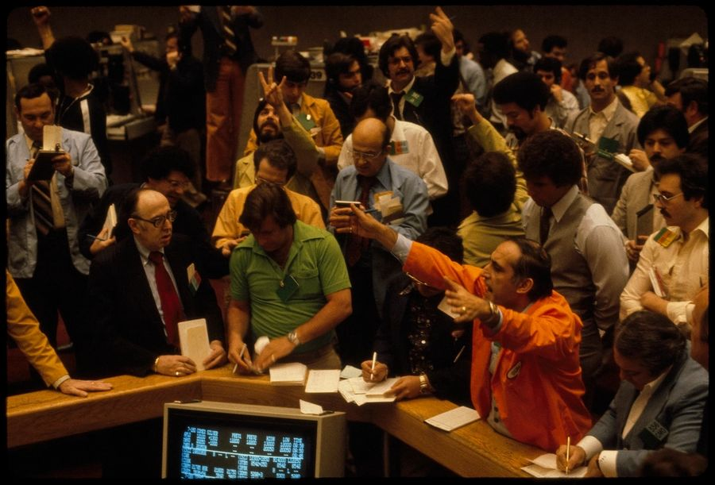

テベス氏、引退記念試合でロナウドがメッシと共演することを期待Tevez hopes Ronaldo will join Messi at testimonialテベス氏がポルトガル人フォワードをラ・ボンボネーラに招くことに成功すれば、その世代を象徴した2人が初めて同じ…でプレーすることになるかもしれない。
テベス氏、引退記念試合でロナウドがメッシと共演することを期待Tevez hopes Ronaldo will join Messi at testimonialテベス氏がポルトガル人フォワードをラ・ボンボネーラに招くことに成功すれば、その世代を象徴した2人が初めて同じ…でプレーすることになるかもしれない。 インド、WTCへの望みを再びつなぐためクライストチャーチでの勝利を追うIndia chase Christchurch win to rekindle WTC hopesシュブマン・ギル率いるチームは、来年のWTC決勝に進むため、現在のサイクルで残り6つのテストマッチすべてに勝利しなければならず、その中にはホームでのオーストラリア戦5試合も含まれるが、…
インド、WTCへの望みを再びつなぐためクライストチャーチでの勝利を追うIndia chase Christchurch win to rekindle WTC hopesシュブマン・ギル率いるチームは、来年のWTC決勝に進むため、現在のサイクルで残り6つのテストマッチすべてに勝利しなければならず、その中にはホームでのオーストラリア戦5試合も含まれるが、… クルースプッレとジャヤワルダナのセンチュリーでスリランカAが決勝進出Croospulle, Jayawardena centuries power Sri Lanka A into finalその追撃の中心となったのはラシス・クルースプッレとシネス・ジャヤワルダナの見事なセンチュリーで、2人がスリランカAの追撃成功の土台を築いた
クルースプッレとジャヤワルダナのセンチュリーでスリランカAが決勝進出Croospulle, Jayawardena centuries power Sri Lanka A into finalその追撃の中心となったのはラシス・クルースプッレとシネス・ジャヤワルダナの見事なセンチュリーで、2人がスリランカAの追撃成功の土台を築いた グルシャン・クラブ・オリンピアード開幕、スポーツを通じてクラブの団結を呼びかけGulshan Club Olympiad opens with call to unite clubs through sport今年の大会では、25クラブを代表する1,250人以上の選手が19のスポーツ競技で競う予定だ。
グルシャン・クラブ・オリンピアード開幕、スポーツを通じてクラブの団結を呼びかけGulshan Club Olympiad opens with call to unite clubs through sport今年の大会では、25クラブを代表する1,250人以上の選手が19のスポーツ競技で競う予定だ。 米国の関税がバングラデシュの衣料品の見通しに影を落とすUS tariff clouds Bangladesh garment outlook提案されている18％の米国の関税により、米国の消費者の衣料品価格が上昇し、支出の削減を余儀なくされ、バングラデシュ製衣料品への需要が弱まる可能性がある。
米国の関税がバングラデシュの衣料品の見通しに影を落とすUS tariff clouds Bangladesh garment outlook提案されている18％の米国の関税により、米国の消費者の衣料品価格が上昇し、支出の削減を余儀なくされ、バングラデシュ製衣料品への需要が弱まる可能性がある。 大豆油価格、1リットル当たり3タカ上昇Soybean oil price up Tk 3 a litre政府は昨日、国際価格と輸入コストの上昇を理由に、地元の精製業者が大豆油の価格を1リットル当たり3タカ引き上げることを認めた。
大豆油価格、1リットル当たり3タカ上昇Soybean oil price up Tk 3 a litre政府は昨日、国際価格と輸入コストの上昇を理由に、地元の精製業者が大豆油の価格を1リットル当たり3タカ引き上げることを認めた。 ダッカ税関を通じた金輸入、3年で99％超の急減Gold imports thru Dhaka customs plunge over 99% in 3 yearsダッカ税関を通じた金の輸入は3年間で99％以上減少した。業界関係者と当局者は、関税の引き上げや厳格化された手荷物規則をその理由に挙げている。
ダッカ税関を通じた金輸入、3年で99％超の急減Gold imports thru Dhaka customs plunge over 99% in 3 yearsダッカ税関を通じた金の輸入は3年間で99％以上減少した。業界関係者と当局者は、関税の引き上げや厳格化された手荷物規則をその理由に挙げている。 政府、4分野で50クロールタカ超の事業を迅速に進める方針Govt to fast-track projects worth over Tk 50cr in four sectors政府は、開発事業の実現可能性評価の要件を簡素化し、その他の手続き上の障害を取り除くため、5人からなる省庁間委員会を設置した。
政府、4分野で50クロールタカ超の事業を迅速に進める方針Govt to fast-track projects worth over Tk 50cr in four sectors政府は、開発事業の実現可能性評価の要件を簡素化し、その他の手続き上の障害を取り除くため、5人からなる省庁間委員会を設置した。
バングラデシュ銀行、現金外貨の販売レートに上限を設定BB caps cash foreign currency selling rateバングラデシュ銀行は銀行に対し、現金外貨を販売する際の最大為替レートがBC（Bills for Collection）販売レートを超えないよう確保するよう指示した。 政府、米国産小麦4.4ラークトンを輸入へGovt to import 4.4 lakh tonnes of US wheat政府は水曜日の夜、2か所の石炭火力発電所からの電力購入に関する料金体系と、米国産小麦4.40ラークトンを輸入する提案を承認した。
政府、米国産小麦4.4ラークトンを輸入へGovt to import 4.4 lakh tonnes of US wheat政府は水曜日の夜、2か所の石炭火力発電所からの電力購入に関する料金体系と、米国産小麦4.40ラークトンを輸入する提案を承認した。 オンライン事業者27,000社をVAT調査の対象として特定27,000 online businesses identified for VAT scrutiny国家歳入庁（NBR）は、VAT調査の対象となる可能性のある電子商取引事業者約27,000社を特定した。その大半は事業者識別番号（BIN）を持っていない。
オンライン事業者27,000社をVAT調査の対象として特定27,000 online businesses identified for VAT scrutiny国家歳入庁（NBR）は、VAT調査の対象となる可能性のある電子商取引事業者約27,000社を特定した。その大半は事業者識別番号（BIN）を持っていない。 創造性と起業家精神の熱意のショーケースA showcase of creativity and entrepreneurial zeal第13回全国SME製品見本市の一角で、モハマド・アブドゥル・ラヒム氏はターコイズ色のジャムダニ・サリーを織りながら座り、好奇心旺盛な来場者が彼の手織り機の周りに集まった。
創造性と起業家精神の熱意のショーケースA showcase of creativity and entrepreneurial zeal第13回全国SME製品見本市の一角で、モハマド・アブドゥル・ラヒム氏はターコイズ色のジャムダニ・サリーを織りながら座り、好奇心旺盛な来場者が彼の手織り機の周りに集まった。 トランプ氏の新たな関税、中国の掌握から世界貿易を引き離すことを狙うTrump’s new tariffs aim to prise global trade from China’s grip米国の最新の関税引き上げは北京との貿易緊張を激化させる見通しであり、中国は世界貿易を再編しようとするワシントンの取り組みの主要な標的となる。
トランプ氏の新たな関税、中国の掌握から世界貿易を引き離すことを狙うTrump’s new tariffs aim to prise global trade from China’s grip米国の最新の関税引き上げは北京との貿易緊張を激化させる見通しであり、中国は世界貿易を再編しようとするワシントンの取り組みの主要な標的となる。 アイスクリームと間違えられたろうそくA candle mistaken for ice creamあなたはアイスクリームとろうそく、どちらになりたいですか？ 蒸し暑いチャイトラの午後にダッカで誰かに聞けば、票はアイスクリームに入る。夜、計画停電のときに聞けば――
アイスクリームと間違えられたろうそくA candle mistaken for ice creamあなたはアイスクリームとろうそく、どちらになりたいですか？ 蒸し暑いチャイトラの午後にダッカで誰かに聞けば、票はアイスクリームに入る。夜、計画停電のときに聞けば―― ゴパルガンジでは多くの顧客がモバイル金融取引を利用できずMany customers in Gopalganj unable to make mobile financial transactions
ゴパルガンジでは多くの顧客がモバイル金融取引を利用できずMany customers in Gopalganj unable to make mobile financial transactions バングラデシュ人3選手、オマーンでのホッケー挑戦へThree Bangladeshis set for Oman hockey stintホッケー代表の3選手――ディフェンダーのアミルル・イスラム、フォワードのラキブル・ハッサン・ロッキー、ゴールキーパーのビプロブ・クジュール――が、オマーンのアル・イティハド・ホッケー・クラブに加入する見通しだ
バングラデシュ人3選手、オマーンでのホッケー挑戦へThree Bangladeshis set for Oman hockey stintホッケー代表の3選手――ディフェンダーのアミルル・イスラム、フォワードのラキブル・ハッサン・ロッキー、ゴールキーパーのビプロブ・クジュール――が、オマーンのアル・イティハド・ホッケー・クラブに加入する見通しだ 2回の遠征で6ゴール：バクーがゴードンの得意の舞台にTwo trips, six goals: Baku becomes Gordon's happy hunting groundイングランド代表の同選手はバクー・オリンピック・スタジアムで再び印象的な活躍を見せ、自身のチャンピオンズ…を伸ばした後、試合の最優秀選手賞を獲得した
2回の遠征で6ゴール：バクーがゴードンの得意の舞台にTwo trips, six goals: Baku becomes Gordon's happy hunting groundイングランド代表の同選手はバクー・オリンピック・スタジアムで再び印象的な活躍を見せ、自身のチャンピオンズ…を伸ばした後、試合の最優秀選手賞を獲得した ハシナ氏はバングラデシュとインドの関係における「とげ」であり、インドもそのことに気づきつつある：フマユン・コビール氏Hasina is a thorn in Bangladesh-India relations, India is also realising this: Humaiun Kobir
ハシナ氏はバングラデシュとインドの関係における「とげ」であり、インドもそのことに気づきつつある：フマユン・コビール氏Hasina is a thorn in Bangladesh-India relations, India is also realising this: Humaiun Kobir スワプナ、インドで国内新記録を樹立し銀メダル獲得Swapna gets silver in India with new national recordスワプナ・カトゥンは木曜日、インドのブバネーシュワルで開催されたBIMSTEC U-23陸上競技大会の女子三段跳びで銀メダルを獲得し、国内新記録を樹立した← トップページへ戻る
スワプナ、インドで国内新記録を樹立し銀メダル獲得Swapna gets silver in India with new national recordスワプナ・カトゥンは木曜日、インドのブバネーシュワルで開催されたBIMSTEC U-23陸上競技大会の女子三段跳びで銀メダルを獲得し、国内新記録を樹立した← トップページへ戻る